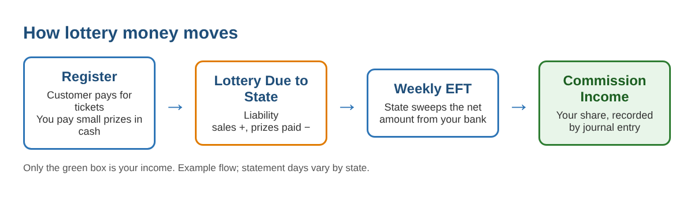
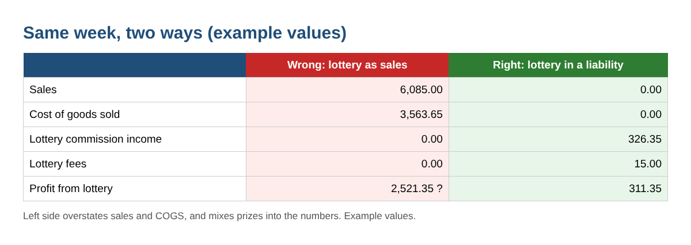
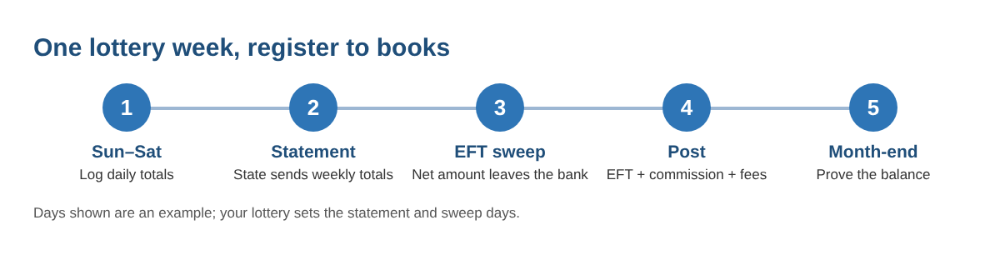

How to Record Lottery Sales, Prize Payouts and Commissions in QuickBooks (Desktop and Online)
↓ Get the free Excel + PDF kit for this article
If your store sells state lottery tickets, a big part of the cash in your register is not yours. You collect it for the state lottery, pay small prizes out of the drawer, and once a week the lottery sweeps the net amount from your bank by EFT. Your real income is the commission and the occasional selling bonus.
The problem shows up in the books. Many convenience stores, liquor stores, gas stations and delis ring lottery into sales, then book the weekly EFT as "cost of goods sold". Sales look much larger than they are, margins look strange, and nobody can reconcile the lottery accounts. Questions about this come up again and again in the QuickBooks Community, usually with only partial answers. This post gives you a complete method you can set up today in QuickBooks Desktop or QuickBooks Online, plus the Excel formulas to check the state's math yourself.
The idea: lottery money sits in a liability account
Treat lottery like money you hold for someone else. Ticket sales increase what you owe the state. Prizes you pay reduce it. The EFT pays it down. The commission the state keeps back for you is the only part that becomes income.


Step 1: Set up four accounts and two items (one time)
- Lottery Due to State – Other Current Liability
- Lottery Commission Income – Income (or Other Income)
- Lottery Fees – Expense (terminal, service or NSF fees)
- Lottery Over/Short – Expense (small differences you cannot explain)
QuickBooks Desktop
- Lists > Chart of Accounts > Account > New, and create the four accounts.
- Lists > Item List > Item > New. Choose Other Charge, name it Lottery Sales, and set Account to Lottery Due to State. Check your state's rules on whether it is taxable for sales tax.
- Create a second Other Charge item, Lottery Prizes Paid, also pointing to Lottery Due to State. You will enter it as a negative amount.
QuickBooks Online
- Open the Chart of accounts (Intuit's current menu path is All apps > Accounting > Chart of accounts), select New, and for the liability choose Account Type Other Current Liabilities. Pick the closest Detail Type the list offers.
- Open Products & services (All apps > Sales & Get Paid > Products & services), select New > Service, name it Lottery Sales, and set the Income account drop-down to Lottery Due to State. This is the same method Intuit's own help article uses for retainers and deposits: an item that sends money to a liability instead of income.
- Create Lottery Prizes Paid the same way.
Menu names in QuickBooks Online change from time to time. If a path looks different, search for "Chart of accounts", "Products and services" or "Journal entry" in the app; the accounting stays the same.
Step 2: Record lottery every day
From the lottery terminal report, write down four numbers: online (draw) sales, instant ticket sales, online prizes paid and instant prizes paid. On your daily sales receipt (or daily summary), add a Lottery Sales line for total sales and a Lottery Prizes Paid line as a negative amount. The day's deposit now matches the drawer, and nothing from lottery lands in income.
Keep the same four numbers in a sheet. To put each day into its statement week (example: weeks end on Saturday), type this in Excel or Google Sheets, with the date in A2:
=A2+MOD(7-WEEKDAY(A2),7)
WEEKDAY returns 1 for Sunday and 7 for Saturday. Change the 7 to the weekday number your state's statement week ends on.
Step 3: Check the weekly statement before you post anything
Your lottery's weekly statement nets everything together. Rebuild its math in one row so you can see that the EFT is right:
Expected EFT = Online sales + Instant settled − Online prizes − Instant prizes − Commission − Bonus + Fees
In a sheet with those values in B2:H2: =B2+C2-D2-E2-F2-G2+H2, then =ROUND(I2-J2,2) for the difference against the actual EFT in I2.
| Example week ending 11/14/2026 | Amount |
|---|---|
| Online (draw) sales | 3,985.00 |
| + Instant ticket packs settled | 2,100.00 |
| − Prizes cashed (870.00 online + 1,340.00 instant) | (2,210.00) |
| − Sales commission (304.25) and cashing bonus (22.10) | (326.35) |
| + Terminal fee | 15.00 |
| = EFT the state sweeps from your bank | 3,563.65 |
Example values only. Statement layouts, commission rates and weeks differ by state.
Then compare the state's online sales and prizes with your daily totals for the same week (a SUMIFS on the week-ending column works well). In the example, the store's log shows 20.00 less online sales than the state and 40.00 more prizes paid. That points to a missed day and a prize paid on a ticket the state did not credit.
Step 4: Post the weekly entries
| # | Where in QuickBooks | Debit | Credit | Example |
|---|---|---|---|---|
| 1 | Bank feed: the EFT withdrawal | Lottery Due to State | Bank | 3,563.65 |
| 2 | Journal entry: commission + bonus | Lottery Due to State | Lottery Commission Income | 326.35 |
| 3 | Journal entry: fees (if any) | Lottery Fees | Lottery Due to State | 15.00 |
- Desktop: in Bank Feeds, add the EFT line with the account Lottery Due to State; use Company > Make General Journal Entries for 2 and 3.
- Online: in Bank transactions, on the For review tab, categorize the EFT withdrawal to Lottery Due to State. For 2 and 3 use + New > Journal entry, fill Account, Debits, Credits and Memo, then Save and close.

Step 5: Prove the balance at month-end
After those entries, Lottery Due to State should hold only what has not been billed yet: sales and prizes since the last statement, plus instant tickets sold from packs that have not settled, minus unsold tickets in packs you already paid for.
| Expected balance on 11/20/2026 | Amount |
|---|---|
| + Online sales after the last statement (11/15–11/20) | 3,420.00 |
| − Prizes paid after the last statement | (1,665.00) |
| + Instant packs not yet billed: value of tickets sold | 1,013.00 |
| − Billed packs: tickets still on the shelf | (44.00) |
| = Expected Lottery Due to State | 2,724.00 |
| QuickBooks Balance Sheet shows | 2,699.00 |
| Difference (books show 25.00 less owed) | (25.00) |
Example values only.
Find the cause first. Only what is left after that goes to Lottery Over/Short (short: debit Lottery Over/Short, credit Lottery Due to State; over: the reverse).
Common mistakes
- Lottery sales coded to income and the EFT coded to cost of goods sold, which overstates both.
- Adding the EFT in the bank feed as a new expense and then recording it again.
- Leaving prizes paid out of the daily entry, so deposits never match.
- Recording the commission twice: once inside the EFT and once as a deposit.
- Paying a prize above your state's retailer limit. Example: the California Lottery says prizes of $599 and under can be claimed at any retailer; larger prizes are claimed with the lottery.
- Never checking the liability balance, so a small weekly error grows all year.
FAQ
Is lottery commission taxable income?
The commission and selling bonuses are paid to your business for selling tickets, so they belong in income. The ticket sales and prizes are the lottery's money. Ask your tax preparer how they should appear on your return.
Do lottery sales go on my sales tax return?
Rules differ by state. Ask your state tax agency or your tax preparer before you include or exclude lottery from gross sales.
What if I use a separate bank account for lottery?
Use the same accounts. Moving money between your own bank accounts is a transfer, not lottery activity.
What about the week that crosses December 31?
Leave it in Lottery Due to State at year-end. Run the balance check on 12/31 and count unsold instant tickets that day.
Checklist
- Four accounts and two items created, names kept the same.
- Daily: four lottery numbers logged; sales receipt uses Lottery Sales (+) and Lottery Prizes Paid (−).
- Weekly: statement math rebuilt, EFT difference 0.00, store log compared.
- Weekly: EFT categorized to Lottery Due to State; commission and fee entries posted.
- Month-end: balance proven; over/short entry only for what is left.
You can download the ready-made Lottery Sales & Commission Recording Kit 2026 for free in the Free kit download box below (Excel + PDF guide, no sign-up).
This post is educational and is not tax, legal or accounting advice. Your state lottery's contract, statements and rules control; ask a qualified professional about your own situation. All numbers are examples. QuickBooks is a registered trademark of Intuit Inc.; not affiliated with or endorsed by Intuit.
Sources (accessed November 2026)
- Intuit QuickBooks help: Record a retainer or deposit (service item with a liability income account)
- Intuit QuickBooks help: Create journal entries in QuickBooks Online
- Intuit QuickBooks help: Match transactions in QuickBooks Online
- California Lottery: Claim a Prize (retailer limit $599 and under)
- QuickBooks Community: Lottery best practices
- QuickBooks Community: Lottery sales & winner payouts
- QuickBooks Community: Proper way to record lotto sales, commission and payouts
Free kit download
Tools to follow this article step by step. No sign-up needed.
- Excel workbook (.xlsx)Lottery_Settlement_Kit_2026_EN.xlsx · 57 KB
- Step-by-step guide (PDF)Lottery_Settlement_Guide_2026_EN.pdf · 59 KB
Free to use for yourself and your own business; please do not resell or redistribute. General information, not tax, legal or accounting advice; check every figure against your own records. QuickBooks is a trademark of Intuit Inc.; BIZLEX is not affiliated with Intuit.